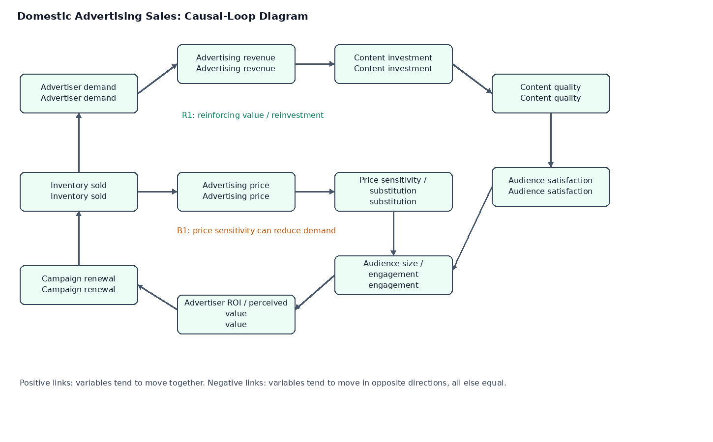
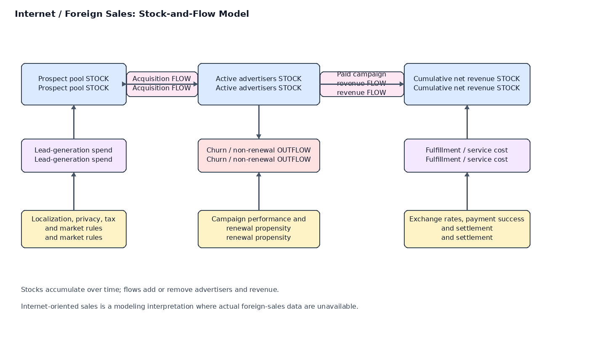

Home / Pricing Analysis
Domestic Sales: Supply-Demand Causal Loop
The reinforcing loop links advertiser demand, revenue, content investment, content quality, audience engagement, perceived advertiser value, renewal, and demand. A balancing loop represents how higher prices can increase price sensitivity and substitution, reducing demand or inventory sold. These are hypotheses to test with data, not proven causal effects.

Internet / Foreign Sales: Stock-and-Flow
Where actual foreign-sales data are unavailable, internet-oriented and cross-border digital advertising are used as the assignment's modeling interpretation. The stocks are the prospect pool, active advertisers, and cumulative net revenue; flows include acquisition, churn, campaign revenue, and costs. Localization, compliance, exchange rates, payment success, and campaign performance influence the flows.

A quantitative model should define time units, initial stock levels, acquisition/churn rates, average campaign revenue, fulfillment costs, and settlement delays.